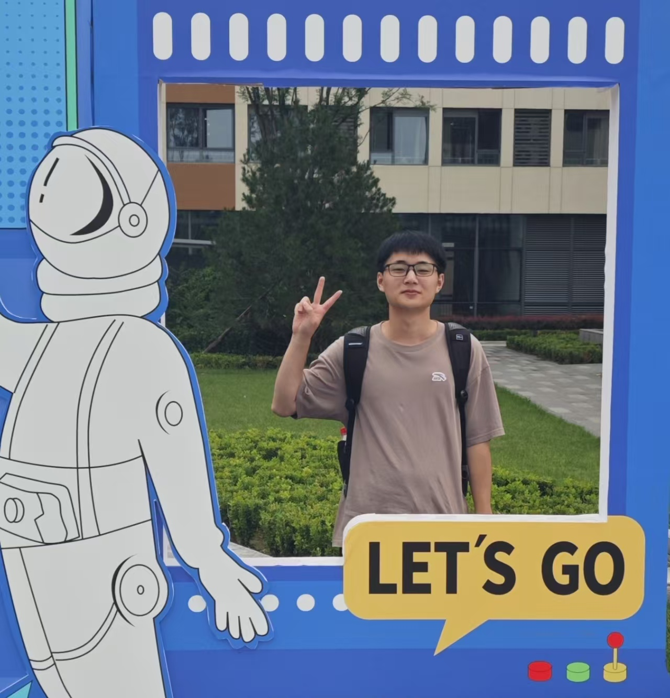
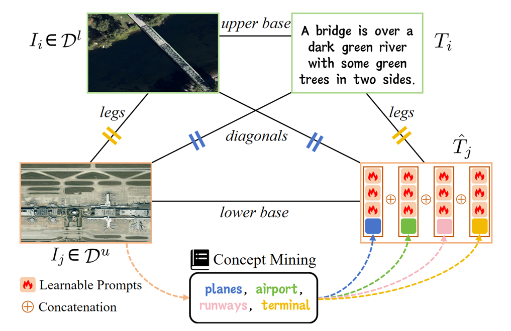
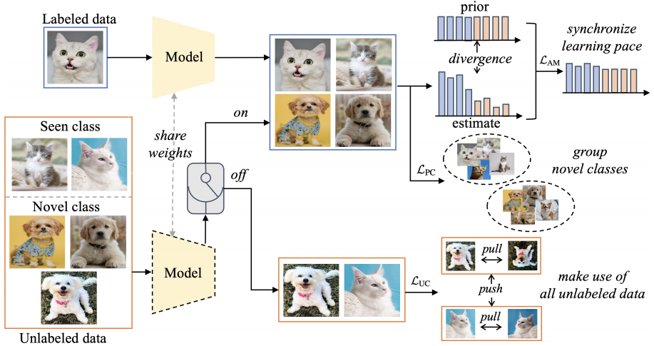

Currently, I am a first-year Computer Science Ph.D. student from School of Computer Science and Engineering in Southeast University, advised by Prof. Min-Ling Zhang and Prof. Tong Wei. Before this, I received my B.Sc. degree from School of Artificial Intelligence, Southeast University in July 2024.
My research interests include Machine Learning, Data Mining and Computer Vision. Specifically, I am interested in Semi-Supervised Learning, Long-Tail Learning and Parameter-Efficient Fine-Tuning Methods.

Semi-Supervised CLIP Adaptation by Enforcing Semantic and Trapezoidal Consistency
Kai Gan,
Bo Ye,
Min-Ling Zhang,
Tong Wei
International Conference on Learning Representations. ICLR 2025.
Code •
Paper

Bridging the Gap: Learning Pace Synchronization for Open-World Semi-Supervised Learning
Bo Ye,
Kai Gan,
Tong Wei,
Min-Ling Zhang
International Joint Conference on Artificial Intelligence. IJCAI 2024.
Code •
Paper